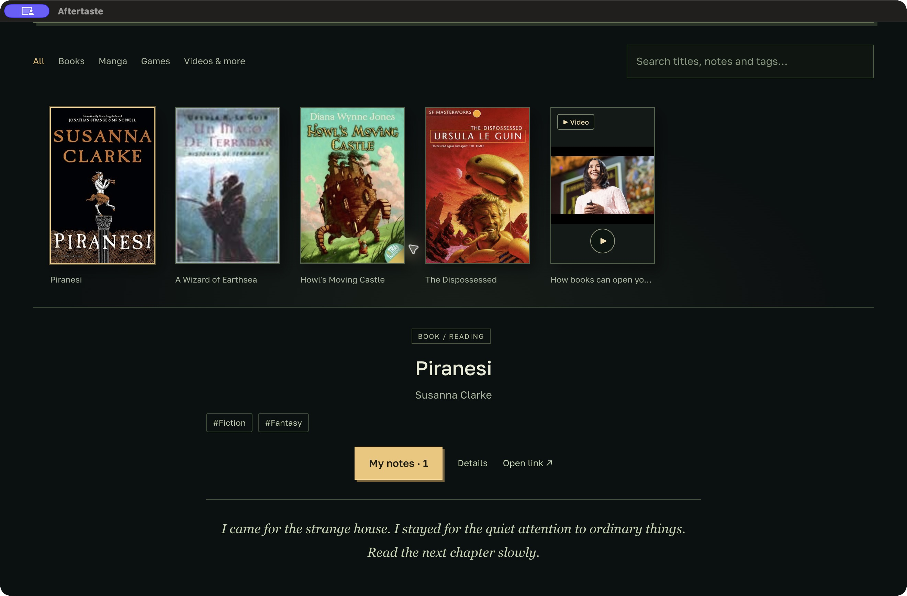

Search your notes
Search titles, authors, note text and tags. Matching notes appear with their text, so you can open them directly.

LIBRARY & NOTES
A local library for books, videos and games, with your notes alongside them.
No account required · Saved on your device
Books, manga, games and videos in one library. Keep a note beside each one, then find it when you need it.

Click Add to find a book, manga or game. For a video or article, paste a link. Add a cover if you want.
Open My notes after a chapter, a video or a finished book. Write a few lines or record a voice note.
Search your notes, mark your progress and back up your library. Connect ChatGPT whenever you want personal recommendations.
Find a book, manga or game in public catalogs. Add videos and articles by link. Keep written notes or voice recordings next to each item.
Search titles, authors, note text and tags. Matching notes appear with their text, so you can open them directly.
Topics are detected on your device from titles, descriptions and notes. You can also add your own tags. No AI account needed.
Download a complete backup with covers, audio, notes and context. A local recovery copy is made before app updates and data replacement.
03 / DESKTOP APP
No Aftertaste account or subscription. Choose your operating system.
Unsigned preview. macOS builds are not notarized. Your system may warn or block first launch.
Everything in the library: catalog search, manual entries, covers, notes, audio, note search, tags and backups. Personal AI recommendations are an optional extension.
On your computer. Keep backups private. OAuth credentials are encrypted and excluded from backups. The library itself is not encrypted by Aftertaste.
No. Record, attach and play audio locally. Only written notes are used for ChatGPT recommendations.